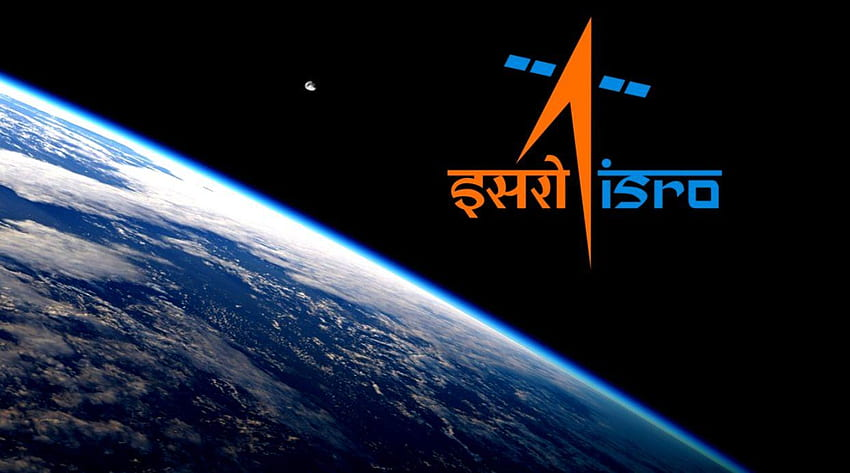

Space And Technology Development in India
In FY23, India's technology industry revenue including hardware was estimated to cross US$ 245 billion (8.4% y-o-y growth), an addition of US$ 19 billion over last year.
Scroll Down ↓
Advantage India
- As per the Economic Survey 2022, India's GERD as a percentage of GDP stood at 0.66%.
- Expanding middle-class and increasing affordability are demand drivers for technologically advanced products.
- India is the top exporter of IT products, has the third-largest pharma sector.
- State University Research Excellence (SERB-SURE) to create a robust R&D ecosystem to fund for Industrial Research Engagement (SERB-FIRE) to support research and development to solve critical problems that are relevant to industries in a public-private partnership mode.
- As per the Economic Survey 2022, India's GERD as a percentage of GDP stood at 0.66%.
- Expanding middle-class and increasing affordability are demand drivers for technologically advanced products.
- As per the Economic Survey 2022, India's GERD as a percentage of GDP stood at 0.66%.
- Expanding middle-class and increasing affordability are demand drivers for technologically advanced products.
Introduction
Modern India has had a strong focus on science and technology, realising that it is a key element for economic growth. India ranks third among the most attractive investment destinations for technology transactions in the world. With more and more multinational companies setting up their R&D centres in India, the sector has seen an uptrend in investment in recent years.
India is among the top countries globally in the field of scientific research, positioned as one of the top five nations in the field of space exploration. The country has regularly undertaken space missions, including missions to the moon and the famed Polar Satellite Launch Vehicle (PSLV). India is likely to take a leading role in launching satellites for the SAARC nations, generating revenue by offering its space facilities for use to other countries
The government has introduced multiple policies aimed at projecting India as a science and technology powerhouse and promoting both public and private sector involvement in the R&D practice. As a result, India's gross expenditure on R&D (GERD) has been consistently increasing over the years. The government has also implemented several fellowship schemes to nurture the human capacity for advanced research in the country.

Market Size

By 2022, R&D expenditure is targeted to reach about 2% of the country's GDP. The engineering R&D and product development market in India is forecast to post a CAGR of 12% to reach US$ 63 billion by 2025, from US$ 31 billion in 2019. As per the Economic Survey 2022, India’s gross domestic expenditure on R&D (GERD) as a percentage of GDP stood at 0.66%.
India's gross expenditure on R&D (GERD) as a percentage of GDP has remained stagnant at around 0.7% for about a decade, lower than Brazil (1.16%), South Africa (0.83%) and others.
IT spending in India will grow 7% YoY to reach US$ 101.8 billion in 2022, compared to U$ 81.89 billion in 2021. India's medical technology sector is forecast to reach US$ 9.6 billion in 2022.
In FY21, there were 5,018 R&D projects, 2,528 fellowships, 3,702 publications, 30,532 ongoing projects and 797 innovations in India.
In FY21, the science and technology sector added 1,497,501 employees, becoming India's top employment generator.
The Ministry of Science & Technology has received an allocation of Rs. 16,361.42 crore (US$ 1.97 billion) in the Union Budget, a nominal increase of 15% from the previous budget estimate.
In India, there are more than 1,250 Global Capability Centres (GCCs), where companies can outsource their product development and receive product engineering services. These GCCs are home to some of the largest companies, many of which have their largest or second-largest R&D centres located in the country.
Accenture offers a framework for assessing the economic effect of AI for selected G20 countries in its latest AI research studies and forecasts that AI will raise India's annual growth rate by 1.3% by 2035. India's National Artificial Intelligence Strategy prepared by NITI Aayog outlined a way forward to harness the potential of Artificial Intelligence (AI) in different fields. State University Research Excellence (SERB-SURE) to create a robust R&D ecosystem in state universities and colleges; Fund for Industrial Research Engagement (SERB-FIRE) to support research and development to solve critical problems that are relevant to industries in a public-private partnership mode.
DEVELOPMENTS/INVESTMENTS
Some of the recent developments in the field of science and technology in India are as follows:
- The National Centre for Good Governance (NCGG) and the Indian National Science Academy (INSA) have joined hands and have launched the 'NCGG - INSA Leadership Programme in Science & Technology (LEADS). Recognizing the critical role played by the scientific leadership in driving scientific progress, this joint initiative seeks to empower them with the tools and capabilities required to effectively lead and navigate the rapidly evolving landscape of science and technology.
- In November 2022, Norwest Venture Partners agreed to invest US$ 32 million in Cerebral Technologies, which specialises in AI, big data, and enterprise cloud among other technologies. In exchange, Norwest Venture Partners will acquire a minority stake in the company.
- In August 2022, a centre of excellence (CoE) for the Metaverse and Web3 technologies was opened in India by Coforge, a provider of digital services and solutions. Over 1,000 people will be trained and upskilled by the company.
- In August 2022, Samsung announced that it was expanding its industry-academia program PRISM (Preparing and Inspiring Student Minds) across 70 engineering colleges in India. The program will help educate students in the domains of artificial intelligence, machine learning and IoT.
- Technology incubator T-Hub launched the semiconductor companion of the AIC T-Hub Foundation programme to develop innovation and entrepreneurship across the semiconductor sector startups.
- Actis, a global investor in sustainable infrastructure, is planning to invest over US$ 700 million to acquire and expand assets for its platform aimed at offering real estate to tenants in the life sciences and allied sectors in India.
- In March 2022, Toyota launched its Mirai hydrogen fuel cell car in India. The Indian Oil Corporation would be supplying hydrogen to power the car.
- India's Top 5 IT firms (TCS, Infosys, Wipro, HCL and Tech Mahindra) added more than 122,000 employees in the first six months of FY22, nearly matching the 138,000 employees hired in the entirety of FY21.
- In October 2021, Biz2Credit, a fintech company, announced a plan to invest US$ 100 million in India over the next five years in research and development activities and expansions.
- From 2014 to 2021, India recorded a 572% growth in patent approvals.
- To accelerate digital innovation in India, NITI Aayog, Amazon Web Services and Intel have come together to develop a new experience studio to boost problem-solving and innovation between government stakeholders, start-ups, enterprises and industry experts. The new experience studio will use technologies such as artificial intelligence, machine learning, Internet of Things, augmented reality, virtual reality, blockchain and robotics to accelerate their use in the public sector.
- TechnoPro, a Japanese tech firm, plans to hire 10,000 engineers and researchers in India by 2022-23.
- Qualcomm plans to invest US$ 8.5 million on design initiatives in India, which would include funding its innovation labs at Hyderabad and Bangalore for R&D.
- According to the Unesco Science Report from 2021 India now spends more on research than France, the UK and Italy.
- The country has the highest number of real-time digital payments globally and has left China and advanced countries far behind.
ECONOMY AND TECHNOLOGY
India logs the highest number of real-time digital payments globally and has left China and advanced countries far behind. India enabled the Aaddhar-based JAM trinity, followed by UPI and the digital health stack. The country is now exploring the extremely ambitious Open Network for Digital Commerce (ONDC) and Digital Ecosystem for Skilling and Livelihood – the DESH-Stack eportal – which have the potential to deliver services to citizens and businesses quickly and efficiently. As per media reports, Ola Electric is investing $500 million in R&D and its focus on cell innovation suggests an increasing appetite for R&D among industry players.

The Indian IT industry is booming. Many Indian startups contribute to future technology trends such as Artificial Intelligence (AI), Blockchain, Quantum Computing, and the Internet of Things (IoT). The IT industry is a major contributor to the Indian economy. India’s booming IT industry makes her a global leader. India accounts for more than half of the US sourcing business. This article discusses the key technologies that India can contribute to its future development, and how you can benefit from them.
IT Technology in India: The Past
India was known to fall short in all areas, especially economic growth. In the last decade, India made massive improvements in Information Technology (IT) to the point that the Indian software industry gained global attention.
1970s
The growth started in the 1970s when it became a destination for software-sourcing businesses. This boom created massive job opportunities for the infant Indian IT industry. The IT revolution was sudden and unknown to many.
The 1980s and 1990s
In the 1980s, India entered the “prepackaged software” industry. There were not enough trained engineers to build custom software. The 1990s saw the introduction of software services made in India. There was the creation of some infant IT industries, the birth of international companies of Indian origin, and the establishment of various development centers in India.
2000 – Present
The Indian IT industry became a powerful influence since this period. There was impressive growth in technological innovations and business strategies.
THE GREAT INDIAN SCIENTISTS
-
Aryabhatta : Man Who Discover Zero

Born - c. 476 AD
Died - c. 499 AD
Known For - Mathematics & Astrology
Achievements - Invented zero, decimal system of numerals, square root of 2, written in Hindi language.
He is considered as the father of Indian science and mathematics.
India's first satellite is named after him.
He also invented Water Clock, Motion of Solar System, and had given an Approximation of "Pie".
-
Sushruta : The Father Of Surgery

He is also known as "The Father Of Plastic Surgery".
Born - c. 460 AD
Died - c. 535 AD
Known For - Medicine
Achievements - Developed over 1000 surgical instruments including scalpel ,forceps,retractor etc.,which revolutionized surgery.
Author Of Sushruta Samhita (Anatomy Book) - World’s First Medical Textbook.
-
Jagadish Chanda Bose

Father Of Wireless Communication.
Born - 30 November 1858
Died - 23 November 1937
Known For - Pioneered Wireless Communication in the 1890s
Achievements - Companion of The Order of the Indian Empire (CIE) (1903) Companion of the Order of the Star of India (CSI) (1911) Knight Bachelor (1917)
-
Dr. Chandrasekhara Venkata Raman

Father Of Wireless Communication.
Born - 7 November 1888
Died - 21 November 1970
Known For - Discovered Scattering of light and "Raman Effect"
Achievements - The Nobel Prize in Physics 1930(CIE)
-
Homi J Bhabha

Father Of Indian Nuclear Power
Born - 30 October 1909
Died - Indian Scientist Bhabha died when Air India Flight 101 crashed near Mont Blanc on 24 January 1966.
Bhabha was the first to do a proper quantum theoretic calculation of the process of electron-positron annihilation and creation.
Achievements - Adams prize in 1942 for his thesis on “The theory of elementary physical particles and their interactions”.
Indian Space Research Organisation [ISRO]

The Indian Space Research Organisation (ISRO) is India's national space agency. It was founded in 1969 by Vikram Sarabhai and is headquartered in Bengaluru. ISRO is the research and development arm of the Department of Space (DoS), which is overseen by the Prime Minister of India.
- Space Application
- Space science and technology
- Broadcasting
- Weather Forecasting
- Disaster Management
- Geographic Information System
- Navigation
- Cartography
- Telenavigation
- Distance Education Satellite
- Communication
ISRO's activities include:
Latest Mission :
- PSLV-C58/XPoSat Mission (January 1, 2024)
- PSLV-C57/Aditya-L1 Mission (September 2, 2023)
- PSLV-C56/DS-SAR Mission (July 30, 2023)
- LVM3 M4 / Chandrayaan-3 Mission (July 14, 2023)